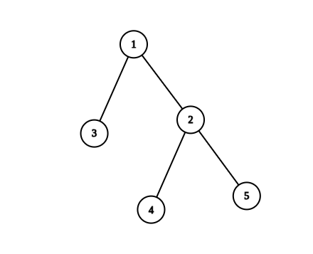
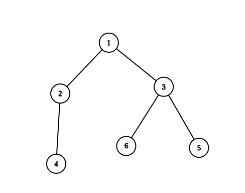

| Category | Difficulty | Likes | Dislikes |
|---|---|---|---|
| Algorithms | Hard | 281 | 9 |
math | dynamic-programming | tree | depth-first-search | number-theory
gameskraft
There is an undirected tree with n nodes labeled from 1 to n. You are given the integer n and a 2D integer array edges of length n - 1, where edges[i] = [ui, vi] indicates that there is an edge between nodes ui and vi in the tree.
Return the number of valid paths in the tree.
A path (a, b) is valid if there exists exactly one prime number among the node labels in the path from a to b.
Note that:
(a, b) is a sequence of distinct nodes starting with node a and ending with node b such that every two adjacent nodes in the sequence share an edge in the tree.(a, b) and path (b, a) are considered the same and counted only once.
Example 1:

Input: n = 5, edges = [[1,2],[1,3],[2,4],[2,5]]
Output: 4
Explanation: The pairs with exactly one prime number on the path between them are:
- (1, 2) since the path from 1 to 2 contains prime number 2.
- (1, 3) since the path from 1 to 3 contains prime number 3.
- (1, 4) since the path from 1 to 4 contains prime number 2.
- (2, 4) since the path from 2 to 4 contains prime number 2.
It can be shown that there are only 4 valid paths.Example 2:

Input: n = 6, edges = [[1,2],[1,3],[2,4],[3,5],[3,6]]
Output: 6
Explanation: The pairs with exactly one prime number on the path between them are:
- (1, 2) since the path from 1 to 2 contains prime number 2.
- (1, 3) since the path from 1 to 3 contains prime number 3.
- (1, 4) since the path from 1 to 4 contains prime number 2.
- (1, 6) since the path from 1 to 6 contains prime number 3.
- (2, 4) since the path from 2 to 4 contains prime number 2.
- (3, 6) since the path from 3 to 6 contains prime number 3.
It can be shown that there are only 6 valid paths.
Constraints:
1 <= n <= 105edges.length == n - 1edges[i].length == 21 <= ui, vi <= nedges represent a valid tree.